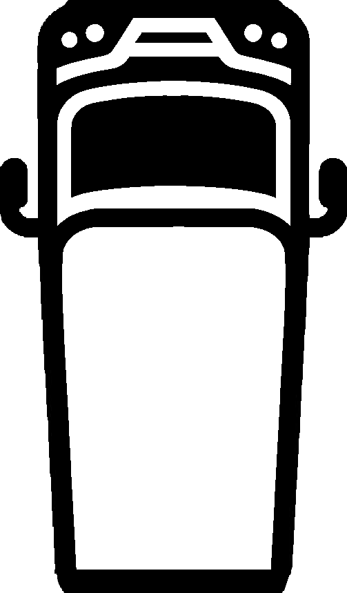

<!DOCTYPE html>
<html>
<head>
    <title>Bus Route Animation with Station Stops</title>
    <meta charset="utf-8">
    <meta name="viewport" content="width=device-width, initial-scale=1.0">
    <!-- Include Leaflet CSS and JavaScript -->
    <link rel="stylesheet" href="leaflet/leaflet.css" />
    <script src="leaflet/leaflet.js"></script>
    <style>
        .leaflet-control-attribution { display: none !important; }
        #map { height: 100vh; }
        /* Smooth rotation transition */
        .rotated-marker img {
            transition: transform 0.2s linear;
            width: 24px; /* Adjust to desired size */
            height: 24px;
        }        
        body {
            background-color: black;
        }
        .leaflet-container {
            background-color: #303030; /* or any dark color you prefer */
        }
    </style>
</head>
<body>
    <div id="map"></div>
    <script>
        // Simulation Settings
        var sim_on = true;
        var sim_year = 2024;
        var sim_month = 6; // July (0-based: 6 = July)
        var sim_day = 30;
        var sim_hour = 13;
        var sim_minute = 25;
        var sim_second = 40; 

        var speed_factor = 100; // Speed factor for simulation (1 = real-time)

        // Initialize the simulation start time
        var sim_start_time = new Date(sim_year, sim_month, sim_day, sim_hour, sim_minute, sim_second).getTime();
        var real_start_time = Date.now();

        // Function to get the current simulation time
        function getCurrentTime() {
            if (sim_on) {
                return speed_factor * (Date.now() - real_start_time) + sim_start_time;
            } else {
                return Date.now();
            }
        }

        // Initialize the map
        var map = L.map('map');

        // Add Tile Layer
        L.tileLayer("https://api.maptiler.com/maps/basic-v2-dark/{z}/{x}/{y}.png?key=KcoL2eYvC6zyiSr1kiT2", {
            backgroundColor: '#303030',
            attribution: '',
        }).addTo(map);    

        // Define the bus icon as a DivIcon with adjusted size
        var busIcon = L.divIcon({
            html: '',
            iconSize: [24, 24], // Set desired size
            iconAnchor: [12, 12], // Center the icon
            className: 'rotated-marker'
        });

        // Function to calculate the bearing between two points
        function calculateBearing(latlng1, latlng2) {
            if (Math.abs(latlng1[0] - latlng2[0] + latlng1[1] - latlng2[1]) < 0.0001) {
                return null;
            }
            var lat1 = latlng1[0] * Math.PI / 180;
            var lon1 = latlng1[1] * Math.PI / 180;
            var lat2 = latlng2[0] * Math.PI / 180;
            var lon2 = latlng2[1] * Math.PI / 180; 

            var y = Math.sin(lon2 - lon1) * Math.cos(lat2);
            var x = Math.cos(lat1) * Math.sin(lat2) -
                    Math.sin(lat1) * Math.cos(lat2) * Math.cos(lon2 - lon1);
            var bearing = Math.atan2(y, x);
            bearing = bearing * 180 / Math.PI;
            bearing = (bearing + 360) % 360;
            return bearing;
        }

        // Function to load JSON files
        async function loadJSON(path) {
            const response = await fetch(path);
            if (!response.ok) {
                throw new Error(`Failed to load ${path}: ${response.statusText}`);
            }
            return response.json();
        }

        // Function to parse time strings into timestamps
        function parseTime(timeStr, dateStr) {
            // timeStr format: "13:20"
            // dateStr format: "30.07.24"
            var [day, month, yearSuffix] = dateStr.split('.');
            var year = parseInt(yearSuffix) + 2000; // Assuming 21st century
            var [hour, minute] = timeStr.split(':').map(Number);
            return new Date(year, month - 1, day, hour, minute, 0).getTime();
        }

        // Main function to load and display all routes
        async function loadAndDisplayRoutes() {
            // Assume we have N routes
            var N = 20; // Replace with the actual number of routes
            var routePromises = [];

            for (let i = 0; i < N; i++) {
                routePromises.push(
                    Promise.all([
                        loadJSON(`utils/traffic_data/8600020/lines/${i}.json`),
                        loadJSON(`utils/traffic_data/8600020/shapes/${i}.json`)
                    ]).then(([lineData, shapeData]) => {
                        displayRoute(lineData, shapeData);
                    }).catch(error => {
                        console.error(`Error loading route ${i}:`, error);
                    })
                );
            }

            // Wait for all routes to load
            await Promise.all(routePromises);
        }

        function displayRoute(lineData, shapeData) {
            // Parse Stops from lines.json
            var stops = lineData.JourneyDetail.Stop.map(stop => ({
                name: stop.name,
                coords: [parseFloat(stop.y) / 1000000, parseFloat(stop.x) / 1000000], // [lat, lng]
                depTime: stop.depTime ? parseTime(stop.depTime, stop.depDate) : null,
                arrTime: stop.arrTime ? parseTime(stop.arrTime, stop.arrDate) - 10000 : null,
                routeIdx: parseInt(stop.routeIdx)
            }));
            stops = stops.filter(stop => stop.depTime !== null || stop.arrTime !== null);

            // Calculate Total Distance
            var shapeCoords = shapeData[0]; // Assuming shapeData[0] is the array of [x, y]
            var latlngs = shapeCoords.map(coord => [coord[1] / 1000000, coord[0] / 1000000]); // [lat, lng]

            var totalDistances = [0]; // in meters
            for (let i = 0; i < latlngs.length - 1; i++) {
                totalDistances.push(totalDistances[i] + map.distance(latlngs[i], latlngs[i + 1]));
            }

            var biased = []; // Contains latlngs and the precise time that latlngs are at that point
            for (let i = 0; i < stops.length - 1; i++) {
                var start_index_latlngs = shapeData[1][stops[i].routeIdx][0];
                var stop_index_latlngs = shapeData[1][stops[i + 1].routeIdx][0];
                var diff_index = stop_index_latlngs - start_index_latlngs;
                var leg_ms = stops[i + 1].arrTime - stops[i].depTime;
                var leg_dist = totalDistances[stop_index_latlngs] - totalDistances[start_index_latlngs];
                var leg_speed = leg_dist / leg_ms;
                for (let j = stop_index_latlngs - diff_index; j < stop_index_latlngs; j++) {
                    biased.push([(totalDistances[j] - totalDistances[start_index_latlngs]) / leg_speed + stops[i].depTime, latlngs[j]]);
                }
                if (i < stops.length - 2) {
                    biased.push([stops[i + 1].depTime, latlngs[stop_index_latlngs]]);
                } else {
                    biased.push([stops[i + 1].arrTime + 2 * 60000, latlngs[stop_index_latlngs]]);
                }
            }

            // Draw the route polyline
            var polyline = L.polyline(latlngs, { color: 'blue' });//.addTo(map);
            map.fitBounds(polyline.getBounds());

            // Initialize the bus marker
            var marker = L.marker(latlngs[0], { icon: busIcon }).addTo(map);
            var angle = calculateBearing(biased[1][1], biased[2][1]);
            var icon = marker.getElement().querySelector('img');
            icon.style.transform = `rotate(${angle}deg)`;

            var show_bus = false;
            // Animation Function
            function animateBus() {
                var currentTime = getCurrentTime();

                if (!show_bus) {
                    if (currentTime < biased[0][0] - 2 * 60000) {
                        marker.getElement().style.display = 'none';
                    } else {
                        marker.getElement().style.display = 'block';
                        show_bus = true;
                    }
                }

                if (currentTime > biased[biased.length - 1][0]) {
                    marker.removeFrom(map);
                    return;
                }

                var position = getPosition(currentTime);

                if (position) {
                    marker.setLatLng(position.latlng);

                    // Set rotation based on the next segment
                    if (position.nextLatLng) {
                        var angle = calculateBearing(position.latlng, position.nextLatLng);
                        var icon = marker.getElement().querySelector('img');
                        if (icon && angle !== null) {
                            icon.style.transform = `rotate(${angle}deg)`;
                        }
                    }
                }

                requestAnimationFrame(animateBus);
            }

            // Start the animation
            animateBus();

            function findClosestLower(target) {
                let left = 0;
                let right = biased.length - 1;
                let result = [biased[0], 0];

                while (left <= right) {
                    const mid = Math.floor((left + right) / 2);
                    if (biased[mid][0] === target) {
                        return [biased[mid], mid];
                    } else if (biased[mid][0] < target) {
                        result = [biased[mid], mid];
                        left = mid + 1;
                    } else {
                        right = mid - 1;
                    }
                }
                return result;
            }

            function getPosition(time) {
                let closestData = findClosestLower(time);
                let closest = closestData[0];
                let index = closestData[1];
                if (closest) {
                    let nextIndex = index + 1;
                    let next = biased[nextIndex];
                    if (!next) {
                        return { latlng: closest[1] };
                    }
                    let ratio = (time - closest[0]) / (next[0] - closest[0] + 0.00001);
                    let lat = closest[1][0] + (next[1][0] - closest[1][0]) * ratio;
                    let lng = closest[1][1] + (next[1][1] - closest[1][1]) * ratio;
                    return {
                        latlng: [lat, lng],
                        nextLatLng: next[1]
                    };
                }
                return null;
            }
        }

        // Start loading and displaying routes
        loadAndDisplayRoutes().catch(error => {
            console.error('Error loading routes:', error);
        });
    </script>
</body>
</html>
